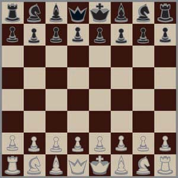
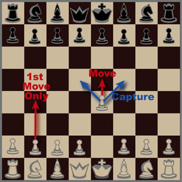
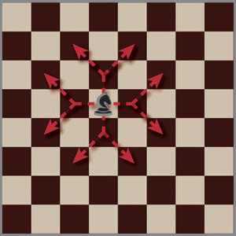
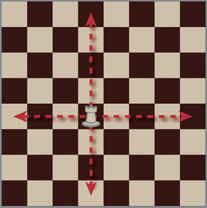
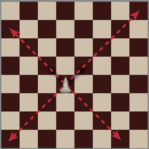
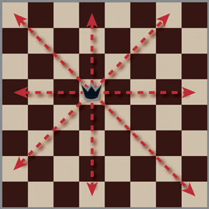
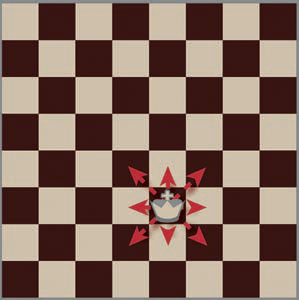

Select a topic on the left to get started
Chessboard
This is how the chessboard looks like at the beginning of play.
Pawn
The pawn can only move forward one square or capture a piece (and thereby moving there) to the front left or front right of it, it is the only piece that moves differently when capturing. As in, the pawn can not capture a piece directly in front of it. Also, if the pawn has never moved before, it can move forward two spaces on its first turn. However, if it does so, and if there's a pawn that could have captured it if it had only moved forward one square. The opponent can still capture the pawn as if it were located one square forward instead of two for one turn. When the pawn reaches the opposite side of the board, you must exchange it for any piece except another pawn or king.
Knight
A knight moves one squares up/ down/ left/ or right and then one square diagonally that shares the same direction. Another way to describe it is that the knight disappears, and the go up/ down/ left/ or right two squares, and then one square perpendicular from that square, and then place the knight there. Only capturing the piece in its final location. A knight ignores any pieces in its movement path except its final location. A knight can not go off the board.
Rook
A rook can move up/ down/ left/ or right any number of square with these constraints. It can not go off the board. It can not travel through pieces (Traveling through means that it could land on it. The knight stops upon capturing an opponent's piece).
Bishop
A bishop can only move diagonally any number of square with these constraints. It can not go off the board. It can not travel through pieces (Traveling through means that it could land on it. The bishop stops upon capturing an opponent's piece).
Queen
A queen can move like a bishop or a rook. As in, it can move up/ down/ left/ right/ or diagonally any number of square with these constraints. It can not go off the board. It can not travel through pieces (Traveling through means that it could land on it. The queen stops upon capturing an opponent's piece).
King
A king can move up/ down/ left/ right/ or diagonally one square with these constraints. It can not go off the board. If the king is being threatened (the opponent has a pieces that could capture it if it was his/ her turn), you must make a move so that it is no longer threatened. If you are unable to do so, you lose the game and you're opponent wins the game. Additionally the king can not travel to a square that is being threatened. The king also has a special that it can do with the rook. If the king and a rook (works with either rook) has not moved, there are no pieces between them, and the king, rook, and squares between them are not threatened. Then you may move the king to the spot between the king and rook where the knight started at the beginning of the game, and the rook at the neighboring square where the bishop started at the beginning of the game. This is called Castling and counts as one move. As stated earlier you win if you are threatening the king's square and the opponent is unable to make a move to stop it. However, if you are not threatening the opponent's king, and the opponent is unable to move the game is tied and called a stale mate. This could happen if you were threatening all of the squares around the king, but not the king's square itself, and the opponent didn't have any other pieces.
Practice
Practice the moves below. Click the "Restart" button to move the pieces back to their start position. Feel free to switch to the other pages to review the rules. We'll save your spot.